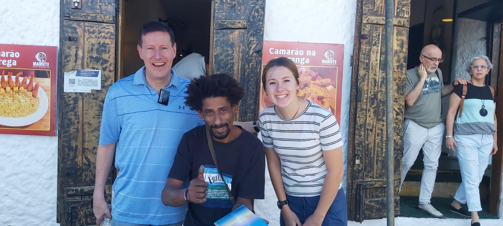

- Largest Country: Brazil is the largest country in South America.
- Home to the largest rainforest, producing 20% of the world's oxygen.
- The official language is Portuguese.
- Known for its vibrant Carnival festival.
- Features diverse ecosystems like the Pantanal and the Cerrado.
- Highest biodiversity globally for plants and animals
- Brazil has won five World Cups.
- Largest economy in South America for agricultural
- Spectacular waterfalls on the border with Argentina.
- The Christ statue in Rio is one of the 7 Wonders of the World.
10 Facts about Brazil
History of the church in Brazil
Why I love Brazil so much:
When I are 16 years old my life turned upside down. My parents had been called to serve as mission leaders for the Brasil São Paulo Interlagos mission. I never thought my senior year of high School would consist of a new country, new language, and a world wide pandemic, where Sao Paulo was a hotspot. that year I came to find my Savior, Jesus Christ. Rock bottom can be a really humbling place when you realize your rock is your redeemer. I accredate many blessings and tender mericies today, from my time learning from the most incredible and loving people I have ever met. I will forever be grateful for my time in Brazil.
Miguel like many struggle to provide for their family. To help his sweet duaghter does finger paintings and sells them on the street Miguel taught me how to use my gifts to bless others

Much of Brazil struggles financially, yet every Brazillian you will meet has the biggest heart and is so charitable.
Ya it was hard but kind of fun
Here are some lessons I learned in Brazil:
- yesterdays dont need to define todays
- God never gives up on us
- Loving others takes a leve of vulnerability
- street soccer is the best thig ever
- humble starts equate to dependant hearts on the Lord
- missionary work is the coolest thing ever
- running can fix any problem
- loneliness
- impatience